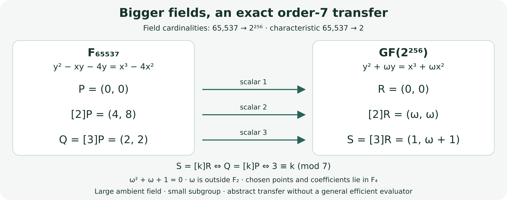

The source field is F₆₅₅₃₇; the binary target has 2²⁵⁶ elements. Lean checks both field cardinalities and the exact order 7 of the chosen generators. This increases the previous field sizes and subgroup order 3. The new models and selected multiples are shown below. [pcc:unverified]

For every integer k, S = [k]R ⇔ Q = [k]P ⇔ 3 ≡ k (mod 7).
These are the example_dlog and target_scalar_mod
endpoints in CrossCharacteristicLarger. [pcc:unverified]
The binary field is Mathlib's GaloisField 2 256.
Because 3 divides 2²⁵⁶−1, Cauchy's theorem supplies a unit of order 3,
chosen as ω. The existing primitive-root sum law gives ω²+ω+1=0;
Lean also checks that ω is outside F₂. Direct affine calculations give
2P=(4,8), 3P=(2,2), and 2(3P)=−P; on the target they give
2R=(ω,ω), 3R=(1,ω+1), and 2(3R)=−R. Thus both nonzero generators
have prime order 7. Mathlib's equal-order constructor and existing scalar
and injectivity laws supply the transfer endpoint. [pcc:unverified]
The target curve coefficients and chosen points lie in the four-element subfield generated by ω. The ambient field has 2²⁵⁶ elements, while the chosen subgroup has only 7. This is not a large-subgroup ECDLP instance. The map uses classical choice of scalar representatives; no general efficient odd-to-binary point evaluator or performance result is supplied.
Use Lean 4.24.0, mathlib v4.24.0 and the exact dependency manifest.
Run lake build and lake env lean AxiomAudit.lean;
the unchanged repository proof gate audits the full example project.
New versioned receipts retain the assembly probe, unsuccessful development
attempts, successful build, axiom audit and source hashes. Claim
PCC-20261115-53afbe remains unsigned pending the independent
repository process. [pcc:unverified]